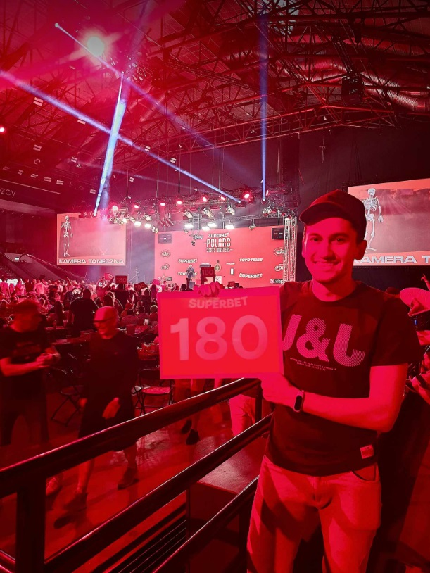
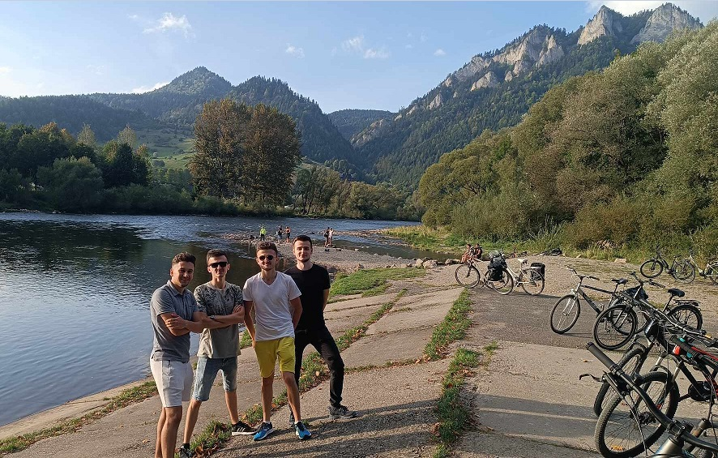

Wakacje 2023
2023 Poland Darts Masters
Kompletna drabinka turniejowa

Zdjęcie z tabliczką 180 podczas przerwy w turnieju

Zawsze warto też sobie zrobić zdjęcie przed pałacem kultury
Góry
Krótka drzemka w Bieszczadach
Wtedy jeszcze nie wiedziałem jak bardzo mnie nogi będą bolały po tym wejściu

Widok na Pieniny i Trzy Korony
Bonus
Razem ze znajomymi po dotarciu do celu